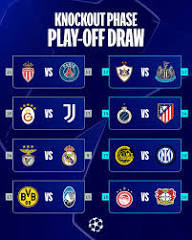

UEFA Çempionlar Liqası — Avropanın öz ölkə çempionatlarında müvəffəqiyyət qazanan klubların mübarizə apardığı ən məşhur futbol turniridir. Turnirin adı 1992-ci ilə qədər Çempion Klublar Kuboku olmuşdur. 1992–1993-cü il mövsümündən etibarən turnir UEFA Çempionlar Liqası adlanır. Turnirin ilk oyunları 1955-1956-cı il mövsümündə keçirilmişdir. Qaydalara uyğun olaraq pley-off mərhələsini keçən və qrup yarışlarına birbaşa düşən komandalar qruplara bölünür. 1997-ci ildən etibarən klub reytinqləri yüksək olan ölkələrin çempionları ilə yanaşı 2-ci, 3-cü, bəzən isə 4-cü yeri tutmuş komandaları da turnirə birbaşa vəsiqə qazanır və ya pley-off mərhələsində oynamaq hüququ əldə edir. Hər komanda rəqib klub ilə 2 oyun keçirir (evdə və səfərdə). Qrupda müvəffəqiyyət qazanan komandalar öz aralarında 1/8, 1/4 və 1/2 oyunları keçirir (yenə də həm evdə, həm də səfərdə olmaqla 2 oyun). Final oyunu isə 1 dəfə olur (əvvəlcədən müəyyənləşdirilmiş meydançada).
UEFA Çempionlar Liqası Azərbaycanda 2000–2009-cu illər arasında ANS-də yayımlanırdı. 2009-cu ildən 2012-ci ilədək Lider TV-də yayımlandı. 2012–2018-ci illərdə AzTV və İdman Azərbaycan kanallarında yayımlandı. 7 avqust 2018-ci ildə CBC Sport, 14 fevral 2023-cü ildən etibarən isə İctimai Televiziya tərəfindən yayımlanır.
Tarixi
UEFA Çempionlar Kuboku XX əsrin ikinci yarısında UEFA tərəfindən Avropada keçirilmiş ən nüfuzlu klub turniri idi. İlk turnir 1955/1956 mövsümündə, sonuncu turnir isə 1991/1992 mövsümündə keçirilmişdir. 1992/1993 mövsümündə turnirin adı və formatı dəyişdirilərək UEFA Çempionlar Liqası ilə əvəz edilmişdir.
Mükafatlar
Kubok və medallar
Hər il qalib komandaya Avropa Çempionlar kuboku təqdim edilir. Kuboku 3 il ardıcıl və ya ümumilikdə beş dəfə qazanan komanda, kubokun dəqiq kopyasını saxlamaq hüququ əldə edir (orijinal kubok həmişə UEFA-da qalır). Bu vaxta kimi bu hüququ Real Madrid, Ayaks, Bayern Münxen, Milan, Liverpul və Barselona əldə edib. Hazırkı kubok gümüşdən hazırlanmışdır, hündürlüyü 74 sm, kütləsi 11 kq-dır. Bu kubok 1966-ci ildə Bern zərgəri olan Jorq Stadelman tərəfindən hazırlanmışdır. 2012-2013-cü ildən etibarən Çempionlar Liqasının qalibi olmuş komandaya 40 qızıl medal, finalda məğlub olmuş komandaya isə 40 gümüş medal təqdim edilir.
Pul mükafatları
2015-16-ci ildən etibarən UEFA tərəfindən pley-off mərhələsində qalib gələn komandaya 2 milyon, məğlub olan komandaya isə 3 milyon avro mükafat təyin edilmişdir. Qrup mərhələsinə çıxış 12 milyon avro, qrup mərhələsində qazanılmış hər bir qələbəyə görə 1.5 milyon, heç-heçəyə görə isə 500 000 avro pul mükafatı mövcuddur. Bundan əlavə, qrup mərhələsini adlamış komandaya 5.5 milyon, 1/4 finala çıxmış komandaya 6 milyon, yarımfinala çıxmış komandaya 7 milyon, finala çıxmış komandaya 10.5 milyon, qalib olmuş komandaya isə 15 milyon avro pul mükafatı təqdim edilir.
Birinci təsnifat mərhələsi: €200,000
İkinci təsnifat mərhələsi: €300,000
Üçüncü təsnifat mərhələsi: €400,000
Pley-offda məğlub olma: €3,000,000
Pley-offda qalib olma: €2,000,000
Qrup mərhələsinə çıxış: €12,000,000
qrup mərhələsində qazanılmış qələbə: €1,500,000
qrup mərhələsində əldə edilmiş heç-heçə: €500,000
1/8 final: €5,500,000
1/4 final: €6,000,000
1/2 final: €7,000,000
Finalda məğlub olma: €10,500,000
Finalda qələbə: €15,000,000 Real Madrid 15 3 1956, 1957, 1958, 1959, 1960, 1966, 1998, 2000, 2002, 2014, 2016, 2017, 2018, 2022, 2024 1962, 1964, 1981
Milan 7 4 1963, 1969, 1989, 1990, 1994, 2003, 2007 1958, 1993, 1995,2005
Liverpul 6 3 1977, 1978, 1981, 1984, 2005, 2019 1985, 2007,2018, 2022
Bayern Münhen 6 5 1974, 1975, 1976, 2001, 2013, 2020 1982, 1987, 1999, 2010, 2012
Barselona 5 3 1992, 2006, 2009, 2011, 2015 1961, 1986, 1994
Ayaks 4 2 1971, 1972, 1973, 1995 1969, 1996
Inter Milan 3 3 1964, 1965, 2010 1967, 1972, 2023
Mançester Yunayted 3 2 1968, 1999, 2008 2009, 2011
Yuventus 2 7 1985, 1996 1973, 1983, 1997,1998, 2003, 2015, 2017
Benfika 2 5 1961, 1962 1963, 1965, 1968,1988, 1990
Nottingem Forest 2 0 1979, 1980 -
Porto 2 0 1987, 2004 -
Seltik 1 1 1967 1970
Hamburq 1 1 1983 1980
Styaua Buxarest 1 1 1986 1989
Olimpik Marsel 1 1 1993 1991
Dortmund 1 1 1997 2013
Çelsi 2 1 2012,2021 2008
Feyenoord 1 0 1970 -
Aston Villa FK 1 0 1982 -
PSV Eyndhoven 1 0 1988 -
Srvena Zvezda Belqrad 1 0 1991 -
Reyms 0 2 - 1956, 1959
Atletiko Madrid 0 3 - 1974, 2014,2017
Valensia 0 2 - 2000, 2001
Fiorentina 0 1 - 1957
Ayntraxt Frankfurt 0 1 - 1960
Partizan Belqrad 0 1 - 1966
Panatinaykos 0 1 - 1971
Lids Yunayted 0 1 - 1975
Seint Etyen 0 1 - 1976
Borussiya Münhenqlaudbax 0 1 - 1977
Brügge 0 1 - 1978
Malmö FF 0 1 - 1979
Roma 0 1 - 1984
Sampdoriya 0 1 - 1992
Bayer Leverkuzen 0 1 - 2002
AS Monako 0 1 - 2004
Arsenal 0 1 - 2006
Tottenhem 0 1 - 2019
Paris Sen-Jermen 0 1 - 2020
Ən böyük hesablı qələbələr:
İspaniya Real Madrid -İsveç Malmö - 8:0
İngiltərə Liverpul - Türkiyə Beşiktaş – 8:0
İspaniya Real Madrid - Belçika Genk - 7 : 0
İngiltərə Arsenal - Çexiya Slaviya Praqa – 7:0
İtaliya Yuventus - Yunanıstan Olimpiakos – 7:0
Ən çox qol vuran futbolçular:
Qeyd:Statistik göstəricilər 2021-ci ilin aprel ayına qədər qeydə alınan nəticədir
Oyunçu Ölkə Qol sayı Oyun sayı Əmsal İllər Klub
1 Kriştiano Ronaldo Portuqaliya 140 176 0.76 2003- Real Madrid,Mançester Yunayted Yuventus FK
2 Lionel Messi Argentina 129 149 0.81 2005- Barselona
3 Robert Levandovski Polşa 105 96 0.5 2011- Borussia Dortmund FK, Bayern Münhen FK
4 Kərim Benzema Fransa 90 128 0.5 2006- Real Madrid, Lyon FK
5 Raul İspaniya 71 142 0.5 1995-2011 Real Madrid, Şalke 04
6 Tomas Müller Almaniya 56 124 0.39 2008- Bayern Münhen FK
7 Ruud van Nistelroy Niderland 56 73 0.77 1998-2009 PSV, Mançester Yunayted, Real Madrid
8 Tyerri Anri Fransa 50 112 0.45 1997-2010 AS Monako, Arsenal, Barselona
9 Alfredo Di Stefano İtaliya 49 58 0.84 1955-1964 Real Madrid
10 Andrey Şevçenko Ukrayna 48 100 0.48 1994-2015 Dinamo Kiyev, Milan, Çelsi
Zlatan İbrahimoviç İsveç 48 120 0.40 2001- PSJ FK, Milan FK, Barselona FK, İnter Milan FK, Yuventus FK, Ayaks FK
11 Eysebio Portuqaliya 46 65 0.71 1961-1974 Benfika
Filippo İnziagi İtaliya 46 81 0.57 1997-2012 Yuventus FK, Milan FK
12 Didier Droqba Kotdivuar 44 92 0.48 2003-2015 Olimpik Marsel FK, Çelsi FK, Qalatsaray FK
13 Alessandro Del Piero İtaliya 42 89 0.47 1995-2009 Yuventus FK
14 Neymar Braziliya 41 67 0.61 2013- Barselona FK, PSJ FK
Serxio Aqüero Argentina 41 76 0.54 2008- Atletiko Madrid FK, Mançester Siti FK
15 Ferenc Puşkaş Macarıstan 36 41 0.88 1956-1966 Budapeşt Honevd FK, Real Madrid FK
16 Edinson Kavani Uruqvay 35 65 0.54 2011- Napoli FK, PSJ FK
Ən çox oyun keçirən futbolçular
Oyunçu Ölkə Oyun sayı Qollar Qol əmsalı Avropada debütü Klub
1 Xavi Hernandez İspaniya 150 12 0.08 1998 Barselona
2 İker Kassilyas İspaniya 150 0 0.00 1999 Real Madrid
3 Raul Qonzales İspaniya 142 71 0.50 1995 Real Madrid, Şalke 04
4 Rayan Giqz Uels 141 29 0.20 1993 Mançester Yunayted
5 Klarenz Sedolf Niderland 125 12 0.09 1992 Ayaks, Real Madrid, Milan, İnter Milan
6 Pol Skoulz İngiltərə 124 25 0.20 1994 Mançester Yunayted
7 Roberto Karlos Braziliya 120 17 0.14 1996 İnter Milan, Real Madrid, Fənərbaxça
8 Kristiano Ronaldo Portuqaliya 176 134 0.67 2003 Mançester Yunayted, Real Madrid
9 Karles Puyol İspaniya 115 2 0.17 1999 Barselona
10 Tyerri Anri Fransa 112 51 0.45 1993 As Monako, Barselona, Arsenal
Ən tez qol vuran futbolçu:
Niderland Roy Makay (Almaniya Bayern Münhen) - 2006-cı il martın 7-də Real Madrid ilə oyunun 10.03-cü saniyəsində fərqlənib.
1 mövsümdə ən çox qol vuran futbolçu:
Portuqaliya Kriştiano Ronaldo (İspaniya Real Madrid) – 2013/2014-cü il mövsümü - 17 qol.
1 oyunda 4 qol vuran futbolçular:
Niderland Marko van Basten
İtaliya Filippo İnzagi
Xorvatiya Dado Prşo
Niderland Rud van Nistelroy
Ukrayna Andrey Şevçenko
Polşa Robert Levandovski
İsveç Zlatan İbrahimoviç
Ən sürətli het-trik:
Mayk Nyuell (“Bləkbörn”) – 6 dekabr 1995-ci ildə “Rusenborq”la oyunda 9 dəqiqəyə 3 qol vurub.
Qol vuran ən gənc futbolçu:
Peter Ofirikuaye – 17 yaş 195 günlükdə 1 oktyabr 1997-cü ildə “Rusenborq” – Olimpiakos oyununda fərqlənib.
3 fərqli klubda 4 kubok qazanan futbolçu:
Klarens Zeedorf 1995-ci ildə “Ayaks”da, 1998-ci ildə "Real"da, 2003-cü və 2007-ci illərdə “Milan”da
Kuboku qazanan ən cavan və ən qoca məşqçilər:
Ən gənc məşqçi - Xose Villalonqa 1956-cı ildə, 36 yaş 185 günlüyündə Madrid "Real"ına kubok qazandırıb.
Ən qoca məşqçi – Raymond Qotals 1993-cü ilində, 71 yaş 232 günlüyündə “Marsel”ə kubok qazandırıb.
Uzatma dəqiqələri oynanılan finallar:
53 finalın 14-də uzatma dəqiqələri oynanılıb. Bunlardan 9-da isə oyunsonrası penaltilər seriyasına müraciət olunub.
Ardıcıl iki oyunda het-trik:
Luis Ardiano (Şaxtyor Donetsk) 2014/15-ci il mövsümündə BATE Borisov komandasına qarşı.
